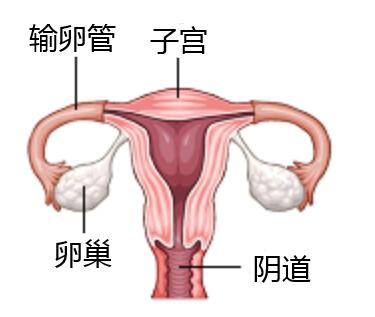

2023年北京中考生物 第17题 解析17. 人类精子与卵细胞结合成受精卵的场所是（ ）A. 卵巢B. 输卵管C. 子宫D. 胎盘【答案】B【解析】【分析】女性的生殖系统的组成：【详解】女性的生殖系统主要包括卵巢、输卵管、子宫、阴道等。卵巢是女性的主要性器官，也是女性的性腺，能够产生卵细胞和分泌雌性激素；输卵管能输送卵细胞，是受精和胚胎初期发育的场所；子宫是胚胎和胎儿发育及产生月经的场所；阴道是精子进入和胎儿产出的通道。故选B。